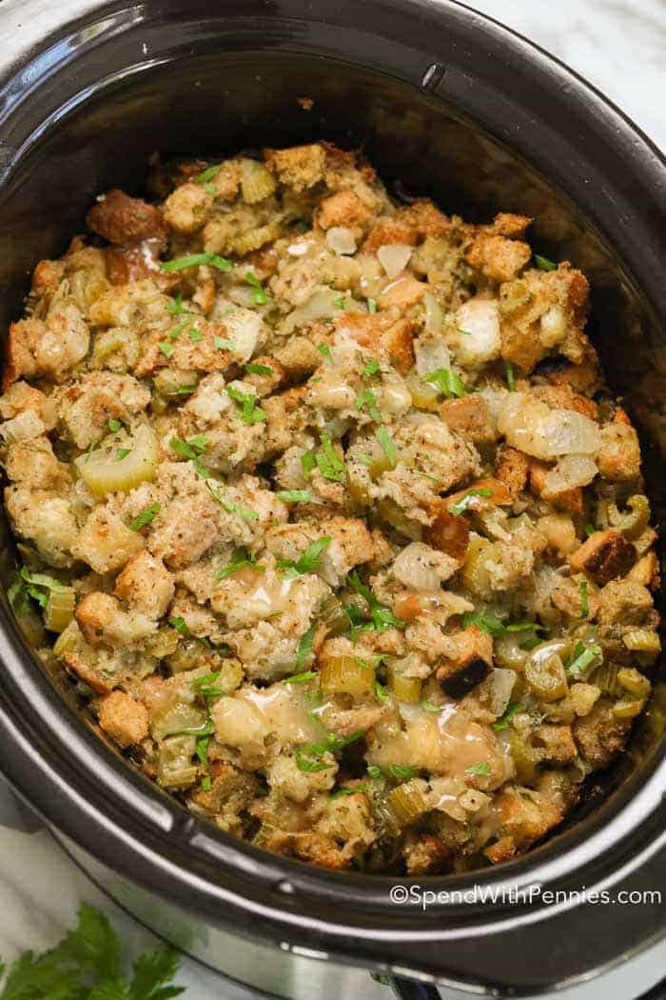

Slow Cooker Stuffing

Description
This crockpot stuffing is an easy way to make extra stuffing for a large crowd — and it frees up stove space because it cooks in a slow cooker. This recipe is designed for use in a standard 4-quart slow cooker and is very tasty and moist!
Ingredients
- Butter: This slow cooker stuffing recipe starts with vegetables sautéed in butter.
- Vegetables: You'll need onions, celery, and mushrooms.
- Parsley: Fresh parsley adds a pop of color and flavor.
- Bread: Opt for slightly stale bread cut into cubes.
- Spices and seasonings: This slow cooker stuffing is flavored with salt, dried sage, poultry seasoning, dried thyme, dried marjoram, and ground black pepper.
- Broth: Use store-bought or homemade chicken broth.
- Eggs: Whole eggs lend moisture and help hold the stuffing together.
Steps
- Sauté the vegetables.
- Spoon the cooked vegetables over the bread and season.
- Moisten with broth, then add the eggs.
- Transfer the mixture to a slow cooker and cook.